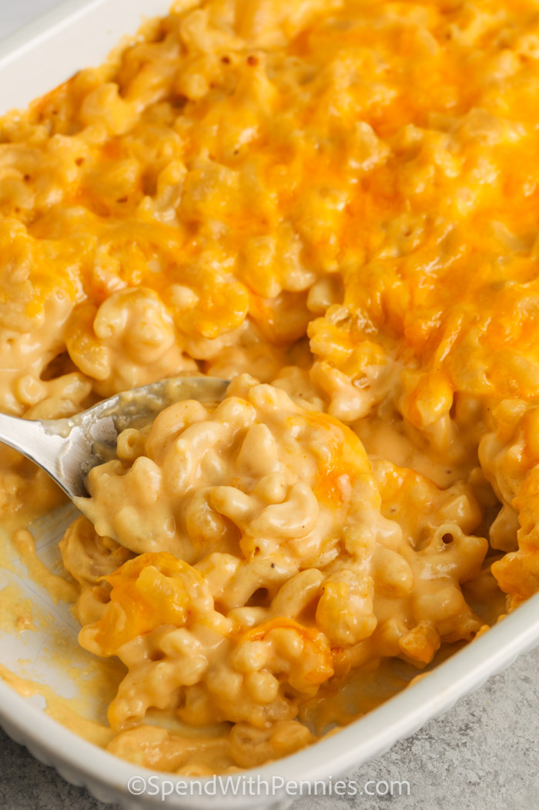

Macaroni and Cheese

A cozy classic that goes with everything!
Everyone loves macaroni and cheese. Whether you're preparing a dish for a gathering,
or staying in for a movie night at home, this recipe will have you covered! The combination of cheddar
and gruyere cheese makes for a decadent and complex dish that will leave your friends asking for the recipe.
What makes this delicious, versatile dish even better? It is easy to make! Follow along
and you'll be chowing down in no time!
What you'll need:
- 1/2lb uncooked elbow macaroni
- 3 tbsp butter
- 2 tbsp all purpose flower
- 1 1/2 cups milk
- 3/4 cup half n half
- 1 1/2 cups shredded cheddar cheese
- 1 cup shredded gruyere cheese
How to make it:
- Preheat the oven to 325 degrees and lightly grease a square baking dish.
- Cook the macaroni al dente according to the package directions, set aside.
- Melt the butter in a saucepan over medium heat. Blend in the flour, cook for 2 minutes.
- Slowly add the milk and half n half, stirring constantly. Cook over medium heat until the
mixture has barely thickened.
- Add 1 1/2 cups cheese to the pan and remove from heat. Stir until melted, then fold in the macaroni and season to taste.
- Pour the contents in the baking dish and cover with remaining cheese. Bake until cheese is melted.
- Serve while the cheese is still melted!